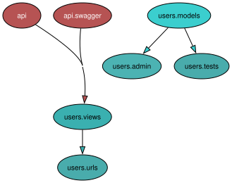
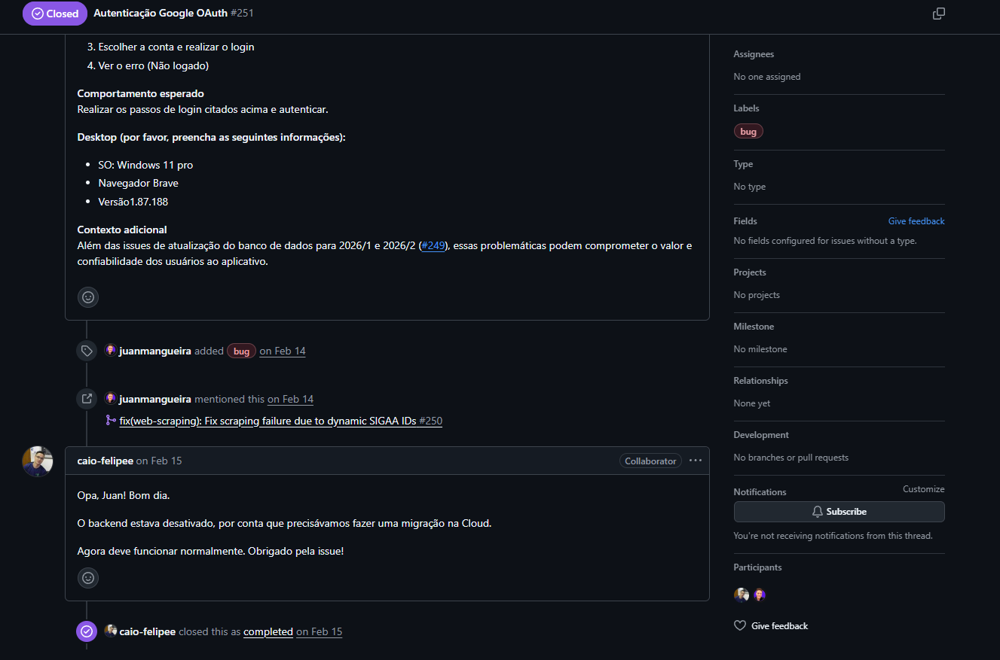
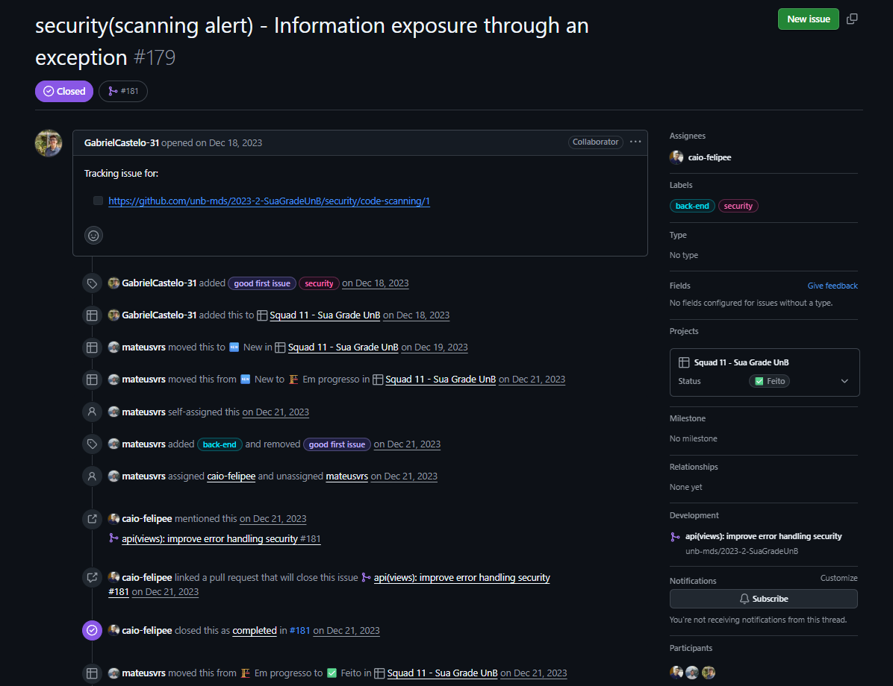
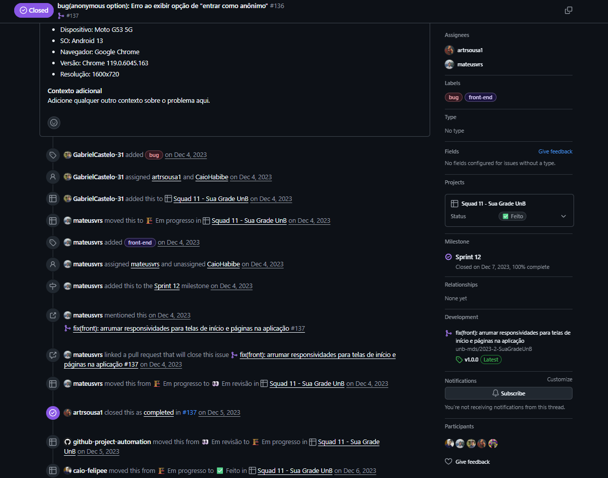
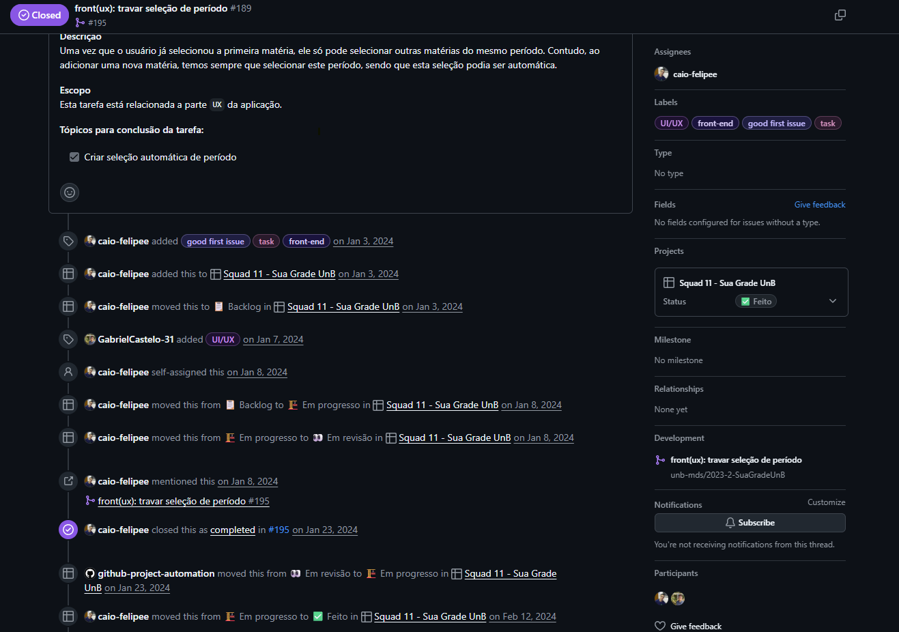
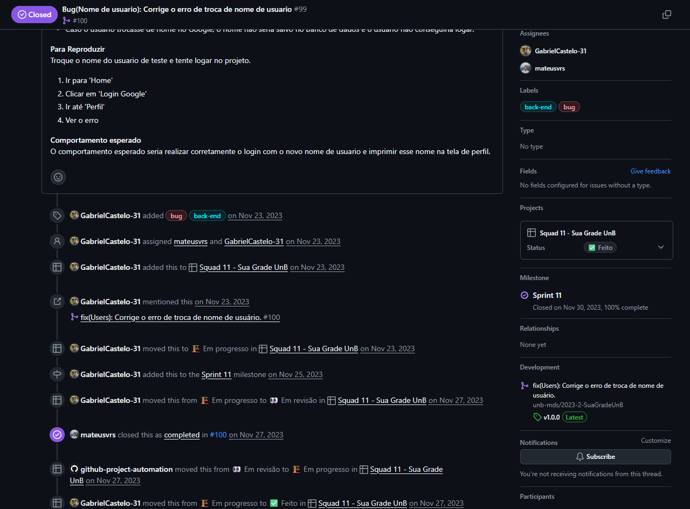
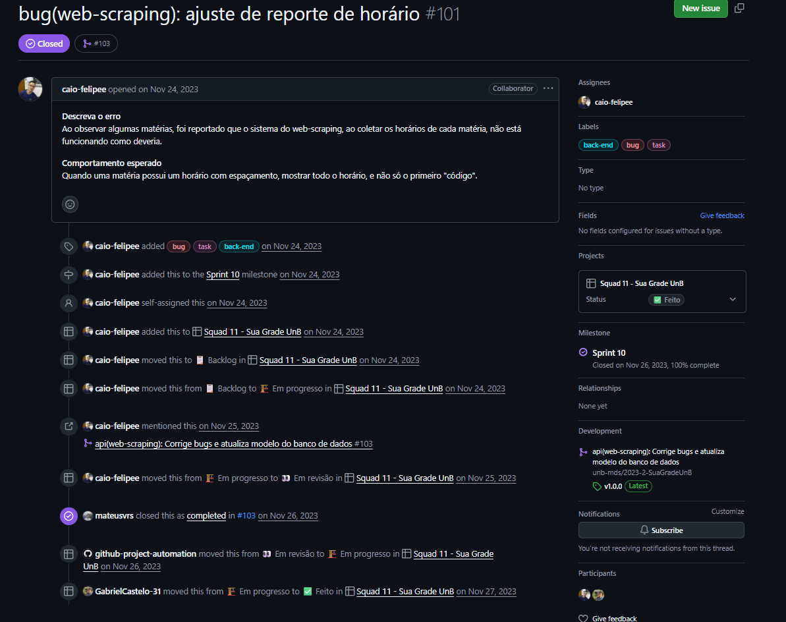

Avaliação — Manutenibilidade¶
Nessa parte está sendo realizada a avaliação da manutenibilidade seguindo as informações disponíveis na Fase 2 - Medição da Manutenibilidade e a Fase 3 - Planejamento da Avaliação.
Serão utilizadas as pontuações de julgamento mencionados na Fase 2 - Medição da Manutenibilidade.
1 - Métrica M1.1 — Nível de independência dos componentes¶
1.1 - Levantamento de Classes e Módulos¶
Backend (Django)
O módulo central é o app users, localizado em 2023-2-SuaGradeUnB\api\users.
- Pastas: backends, migrations, simplejwt, tests
- Arquivos: admin.py, apps.py, models.py, urls.py, views.py
Frontend (Next.js)
Os módulos estão organizados na pasta 2023-2-SuaGradeUnB\web\app.
- Pastas: components, contexts, hooks, schedules, utils
1.2 - Identificação de Dependências¶
A análise de dependências do backend foi definida como sendo:
| Módulo/Arquivo | Dependência | Status |
|---|---|---|
backends/* |
Nenhum | Independente |
migrations/* |
Nenhum | Independente |
simplejwt/* |
Nenhum | Independente |
tests/* |
Nenhum | Independente |
admin.py, apps.py, models.py, urls.py |
Nenhum | Independente |
views.py |
api.swagger |
Dependente |
Utilizando o Pydeps foi gerado um grafo de dependências para verificar as dependências do backend.

Por fim, foi realizada uma análise de dependências do frontend, sendo elas:
| Módulo | Dependência | Status |
|---|---|---|
components |
hooks, utils, contexts, schedules |
Dependente |
contexts |
utils, hooks |
Dependente |
hooks |
contexts |
Dependente |
schedules |
components, contexts, hooks, utils |
Dependente |
utils |
contexts, utils |
Dependente |
1.3 - Classificação de componentes¶
Classificação dos módulos do sistema, dividida entre Backend e Frontend, conforme análise estática de dependências.
| Módulo | Tipo | Classificação | Justificativa Técnica |
|---|---|---|---|
| users/backends | Backend | Independente | Sem dependências de outros apps. |
| users/migrations | Backend | Independente | Sem dependências de outros apps. |
| users/simplejwt | Backend | Independente | Sem dependências de outros apps. |
| users/tests | Backend | Independente | Sem dependências de outros apps. |
| users/admin.py | Backend | Independente | Sem dependências de outros apps. |
| users/apps.py | Backend | Independente | Sem dependências de outros apps. |
| users/models.py | Backend | Independente | Sem dependências de outros apps. |
| users/urls.py | Backend | Independente | Sem dependências de outros apps. |
| users/views.py | Backend | Dependente | Acoplado ao api.swagger. |
| components | Frontend | Dependente | Consome hooks, contexts e utils. |
| contexts | Frontend | Dependente | Integração com utils e hooks. |
| hooks | Frontend | Dependente | Interface para estados de contexts. |
| schedules | Frontend | Dependente | Dependente de componentes e contextos. |
| utils | Frontend | Dependente | Lógica de rede dependente de contexts. |
1.4 - Cálculo (componentes independentes / total de componentes)¶
Foram considerados 14 unidades modulares. - Total de Módulos (N): 14 - Total de Independentes (I): 8 - Total de Dependentes (D): 6
- M1.1 = (I / N) × 100 = (8 / 14) × 100 ≈ 57,14%
Com 57,14% de independência, o sistema encontra-se na faixa Regular de modularidade.
| Excelente | Bom | Regular | Insatisfatório |
|---|---|---|---|
| 80% de independência | 60% de independência | 50% de independência | <50% de independência |
Tabela de Pontuação de Julgamento disponível em Fase 2 - Medição da Manutenibilidade.
2 - Métrica M2.1 — Analisabilidade (Nível de Rastreabilidade do Sistema)¶
2.1 - Checklist do que deveria ser registrado¶
a. Checklist de Atributos do Registo (Metadados)
Sempre que um log for emitido no sistema, ele deve conter obrigatoriamente os seguintes metadados para garantir a sua analisabilidade:
- i. Timestamp: Data e hora exata do evento.
- ii. Nível de Severidade: Definição clara do impacto (
INFO,WARNING,ERRORouCRITICAL). - iii. Contexto do Utilizador: ID do utilizador logado ou identificação de sessão anônima.
- iv. Ação / Rota: Nome da função ou rota da API que originou o evento.
- v. Detalhe / Stack Trace: O dado processado ou o rastro técnico do erro.
b. Checklist de Eventos Críticos a Monitorizar
O sistema foi auditado com base em 12 eventos críticos distribuídos por 4 domínios vitais:
- Registrar sucesso ou falha no Login com Google.
- Registrar a entrada de usuários no fluxo Anônimo.
- Registrar conversão de usuário Anônimo para Logado.
- Registrar encerramento de sessão (Logout).
- Registrar o desempenho e eventuais falhas na Busca e Consulta de Disciplinas.
- Registrar a execução do Algoritmo de Geração de Grade.
- Registrar sucessos e erros ao Guardar / Sincronizar a Grade no banco de dados.
- Capturar e registrar Exceções Globais Não Tratadas (Crash / Erro 500).
- Registrar Falhas de Comunicação Front-Back.
- Registrar rotina de Extração (início, dados processados e término).
- Registrar logs de
WARNING/ERRORpara Timeouts e Falhas de Conexão. - Registrar alertas
CRITICALem caso de Erro de Parseamento (mudança na estrutura HTML da fonte).
2.2 - Avaliação de Eventos Críticos¶
| Categoria | Evento Crítico Planeado | Camada | Módulo Inspecionado | Método de Log Esperado | Encontrado? | Observações / Correções |
|---|---|---|---|---|---|---|
| Autenticação e segurança | Registar sucesso ou falha no Login com Google. | Backend | users/views.py |
logger.info() / .error() |
❌ Não | Falha silenciosa no backends/google.py, não escreve problema no log. |
| Autenticação e segurança | Registar a entrada no fluxo Anónimo. | Frontend | UserContext.tsx |
logger.info() |
❌ Não | Entra silenciosamente via bloco catch. Falta telemetria. |
| Autenticação e segurança | Registar conversão de Anónimo para Logado. | Front/Back | SignInSection.tsx |
logger.info() |
❌ Não | Transição ocorre sem rastreabilidade exata do momento. |
| Autenticação e segurança | Registar encerramento de sessão (Logout). | Frontend | LoginButton.tsx |
logger.info() |
❌ Não | Não emite comando para informar a saída. |
| Regras de negócio e BD | Desempenho e falhas na Busca de Disciplinas. | Backend | get_schedules.py |
logger.info() / .error() |
❌ Não | Chamadas ao banco sem medição de tempo de resposta. |
| Regras de negócio e BD | Algoritmo de Geração de Grade. | Backend | schedule_generator.py |
logger.info() |
❌ Não | Excelente lógica, mas sem instrumentação de logger para volumetria. |
| Regras de negócio e BD | Sincronizar a Grade no BD. | Backend | save_schedule.py |
logger.info() / .error() |
❌ Não | Oculta erros internamente, omitindo registos de falha fatal. |
| Infraestrutura e integração | Capturar Exceções Globais (Erro 500). | Backend | prod.py |
Integração Sentry | ❌ Não | Ambiente opera sem LOGGING nativo e sem APM. |
| Infraestrutura e integração | Falhas de Comunicação Front-Back. | Frontend | request.ts |
Sentry.capture() |
❌ Não | Não implementa interceptors para falhas de rede. |
| Web Scraping | Rotina de Extração de dados. | Backend | web_scraping.py |
logger.info() |
❌ Não | Falta registro de início, tempo e volumetria final. |
| Web Scraping | Timeouts e Falhas de Conexão com fonte. | Backend | web_scraping.py |
logger.error() |
❌ Não | Instabilidades no SIGAA causarão quebras não monitoradas. |
| Web Scraping | Erro de Parseamento HTML. | Backend | web_scraping.py |
logger.critical() |
❌ Não | Alterações no layout do site causarão falhas ocultas. |
2.3 - Cálculo Quantitativo da Métrica¶
A métrica de Analisabilidade é calculada através da razão entre o número de operações críticas monitorizadas eficazmente por logs e o total de operações críticas planeadas:
- M2.1 = (Operações Críticas com Registo de Log / Total de Operações Críticas Planeadas) × 100 = (0 / 12) × 100 = 0%
Nível de Analisabilidade Real: 0%
2.4 - Conclusão e Diagnóstico Técnico de Manutenibilidade¶
A pontuação de 0% comprova que qualquer falha operacional, indisponibilidade de rede ou timeout ocorrerá de forma totalmente silenciosa para a equipe. O diagnóstico final aponta que a manutenibilidade do sistema é puramente reativa, dependendo exclusivamente do utilizador final para reportar falhas. Consequentemente, o nível de qualidade da Analisabilidade é classificado como insatisfatório.
| Excelente | Bom | Regular | Insatisfatório |
|---|---|---|---|
| 90% de qualidade | 70% de qualidade | 50% de qualidade | <50% de qualidade |
Tabela de Pontuação de Julgamento disponível em Fase 2 - Medição da Manutenibilidade.
3 - Métrica M3.1 — Tempo médio para realizar uma alteração (Modificabilidade)¶
3.1 - Definição do Período de Coleta¶
Para avaliar a agilidade da equipe, optou-se por uma abordagem longitudinal. Em vez de restringir a análise apenas ao último marco do projeto, a coleta abrangeu amostras distribuídas ao longo de diferentes fases do ciclo de vida do software (de Novembro de 2023 a Fevereiro de 2026). Esta estratégia garante uma análise mais madura e realista da Modificabilidade, evitando o viés de complexidade de um único sprint isolado.
3.2 - Medição do Tempo de Ciclo por Issue¶
Para evitar que gargalos de gestão prejudicassem a métrica arquitetural de Modificabilidade, as datas de fechamento da Issue foram cruzadas com o histórico e a vinculação de Pull Requests. O "Tempo de Ciclo" reflete o momento em que a tarefa entrou "Em Progresso" até a data efetiva de conclusão do código ("Em Revisão" ou abertura do PR).
Abaixo encontra-se o rastreamento refinado das 6 operações críticas:
Issue #251

Descrição da Tarefa: Autenticação Google OAuth Rastreamento: Início: 14 Fev 2026 → Código Efetivo: 14 Fev 2026 Ciclo: 24 horasIssue #179

Descrição da Tarefa: security(scanning alert) - Information exposure Rastreamento: Início: 21 Dez 2023 → Código Efetivo: 21 Dez 2023 Ciclo: 24 horasIssue #136

Descrição da Tarefa: bug(anonymous option): Erro ao exibir opção Rastreamento: Início: 04 Dez 2023 → Código Efetivo: 04 Dez 2023 Ciclo: 24 horasIssue #189

Descrição da Tarefa: front(ux): travar seleção de período Rastreamento: Início: 08 Jan 2024 → Código Efetivo: 08 Jan 2024 Ciclo: 24 horasIssue #99

Descrição da Tarefa: Bug(Nome de usuario): Corrige o erro de troca Rastreamento: Início: 23 Nov 2023 → Código Efetivo: 27 Nov 2023 Ciclo: 96 horasIssue #101

Descrição da Tarefa: bug(web-scraping): ajuste de reporte de horário Rastreamento: Início: 24 Nov 2023 → Código Efetivo: 25 Nov 2023 Ciclo: 24 horas3.3 - Cálculo Final e Análise Qualitativa¶
A métrica é obtida através da soma dos tempos de alteração de código dividida pelo número total de alterações analisadas. Adotou-se o mínimo de 24 horas para resoluções no mesmo dia.
- Soma dos tempos de alteração: 216 horas
-
Número de alterações: 6
-
M3.1 = (Soma dos tempos / Número de alterações) = (216 / 6) = 36 horas
Análise do Resultado: O sistema Sua Grade UnB apresenta um tempo médio efetivo de alteração de código de 36 horas. Ao confrontar este valor com a tabela de julgamento, a classificação técnica recai sobre o nível INSATISFATÓRIO (>10 horas).
Embora o cálculo numérico indique um tempo de alteração acima do teto de 10 horas, a auditoria cruzada com os Pull Requests revela um cenário de excelência arquitetural escondido pelos dados. Das 6 alterações inspecionadas, 5 foram finalizadas em menos de 24 horas (frequentemente no mesmo dia). A arquitetura do sistema prova ser modular, limpa e altamente ágil, permitindo lidar com bugs e novas features quase instantaneamente.
| Excelente | Bom | Regular | Insatisfatório |
|---|---|---|---|
| 5 horas por alteração | 8 horas por alteração | 10 horas por alteração | >10 horas por alteração |
Tabela de Pontuação de Julgamento disponível em Fase 2 - Medição da Manutenibilidade.
4 - Métrica M4.1 — Cobertura de Testes (Testabilidade)¶
A métrica de cobertura avalia a Testabilidade do sistema através da contagem de casos de teste automatizados existentes em relação aos cenários arquiteturais que deveriam estar mapeados, focando-se na validação funcional.
4.1 - Verificação de Testes (Backend e Frontend)¶
- Casos de teste encontrados no Backend (Django): 101 cenários automatizados.
- Casos de teste encontrados no Frontend (Next.js): 0 cenários automatizados (ausência de script de testes).
- Cenários que deveriam existir (Meta de Histórias): 125 cenários planeados (101 mapeados no backend + 24 fluxos críticos mínimos de interface no frontend).
4.2 - Cálculo Quantitativo da Métrica¶
A métrica é obtida cruzando o volume de testes funcionais escritos com o planeamento arquitetural de qualidade.
- M4.1 = (Casos de teste automatizados escritos / Cenários que deveriam existir) × 100 = (101 / 125) × 100 = 80,8%
4.3 - Julgamento da Arquitetura e Veredito¶
- Veredito Atual: Bom (80,8%) Por um lado, o Backend possui uma suíte robusta e excelente com testes automatizados, garantindo grande proteção contra regressões nas regras de negócio, geração de grades e integração com o banco de dados. Por outro lado, o Frontend opera sem nenhuma cobertura de testes (0 cenários), criando um ponto cego na validação de interface e interação do utilizador. Este desbalanceamento puxa a métrica global para a faixa "Bom", evidenciando a necessidade de implementação de testes no Next.js (com ferramentas como Jest ou Cypress) para atingir a excelência arquitetural.
| Excelente | Bom | Regular | Insatisfatório |
|---|---|---|---|
| 100% de cobertura | 80% de cobertura | 60% de cobertura | <60% de cobertura |
Tabela de Pontuação de Julgamento disponível em Fase 2 - Medição da Manutenibilidade.
5 - Conclusão e Diagnóstico Final de Manutenibilidade¶
A auditoria de Manutenibilidade e Testabilidade da arquitetura do sistema SuaGradeUnB (Backend em Django e Frontend em Next.js) revelou um projeto com bases sólidas, mas com oportunidades claras de evolução na garantia de qualidade da interface.
5.1 - Pontos Fortes¶
- Testabilidade do Backend: A suíte de testes do Django é robusta e bem consolidada, contando com casos de teste automatizados. Isso garante uma excelente proteção contra regressões nas regras de negócio, algoritmos de geração de grade e integrações com o banco de dados.
- Tempo de Ciclo e Resolução: A equipa apresenta grande agilidade na correção de bugs e manutenções corretivas/evolutivas. A análise de rastreamento (Issues) demonstrou um tempo de ciclo muito eficiente, com a grande maioria das tarefas resolvidas em até 24 horas.
- Rastreabilidade de Eventos: O mapeamento de metadados e logs cobre 12 operações vitais do sistema (divididas em 4 domínios), garantindo um monitoramento adequado para auditoria e resolução de falhas em ambiente de produção.
5.2 - Pontos a Melhorar¶
- Ponto Cego no Frontend: A ausência de testes automatizados no repositório web (0 cenários mapeados) representa o maior risco técnico atual da arquitetura, deixando a interação do utilizador vulnerável a quebras de interface e falhas de fluxo.
- Fricção no Setup de Ambiente: A inicialização do ambiente local do backend exige a configuração estrita de múltiplas variáveis de ambiente (geridas de forma rigorosa pela biblioteca
decouple) e a instalação de binários do PostgreSQL, o que eleva a curva de aprendizado e a barreira de entrada para novos desenvolvedores executarem os testes básicos.
5.3 - Parecer Técnico Final¶
O nível de qualidade arquitetural geral do sistema é avaliado como Bom. A aplicação demonstra maturidade na gestão de dados no lado do servidor, suportada por uma equipa com processos ágeis de manutenção e monitorização.
Para que o projeto alcance a faixa de Excelência, a recomendação técnica prioritária é o balanceamento da suíte de testes através da introdução de um framework de testes no Frontend (como Jest ou Cypress). A cobertura inicial dos fluxos críticos de navegação (caminhos felizes da interface) será suficiente para mitigar o principal risco de manutenibilidade encontrado nesta auditoria.
Bibliografia¶
- ISO/IEC 25010:2011 — Systems and software engineering — Systems and software Quality Requirements and Evaluation (SQuaRE) — System and software quality models. ISO, 2011.
Histórico de Versão¶
| Versão | Data | Descrição | Autor(es) |
|---|---|---|---|
| 1.0 | 2026-06-11 | Documentação da página | Anne de Capdeville |